The Sensory Apothecary
From Essence to Ritual
감각의 약장 — 오늘의 서랍을 열어, 나를 위한 처방을 꺼낸다
ARCANA는 옛 약제사의 서랍처럼 원료를 칸마다 나눠 담고, 오늘의 상태에 맞는 서랍을 열어 리추얼을 처방하는 웰에이징 스킨케어입니다. 모든 처방의 바탕에는 해 질 녘에 꽃잎을 여는 달맞이꽃이 있습니다.
Your path to ARCANA
All productsfive rituals
The Sensory Apothecary · 감각의 약장
옛 약제사의 서랍 속에
숨겨두던 젊음의 비방
ARCANA는 라틴어로 ‘숨겨진 비밀’. 연금술에서 단수형 Arcanum은 영원한 젊음을 주는 비약을 뜻한다.
옛 약방의 격자 서랍장. 서랍마다 원료가 하나씩 담기고, 그날의 나에게 맞는 서랍을 열어 하루의 리추얼을 처방한다. 매일의 처방이 쌓이면 나에게 물려줄 나만의 약장이 된다.
- Less, but precise오늘 필요한 것만 정확하게
- Ritual, not routine체크리스트가 아니라 감각이 깨어나는 시간
- Care that connects스킨케어·영양·휴식을 하나의 흐름으로
- Aging as archive매일의 돌봄이 나만의 에이징 방식이 됨
Le Tiroir · 서랍의 역할
서랍 하나가 하는 여덟 가지 일
서랍을 열어 각각의 역할을 꺼내보세요. 숨긴다 + 나눈다 + 꺼내준다가 ARCANA의 구조, 내 영역이 된다가 무드입니다.
Product · One Bottle
하나의 병, 다섯 가지 투명도
모든 제품은 같은 보틀을 씁니다. 제형은 유리의 투명도로, 서랍은 라벨의 라인 컬러로 구분합니다.
L'Apothicaire · 4 서랍 × 5 제형 = 20
칸칸이 나뉜 약장
가로 한 줄은 하나의 서랍(고민), 세로 한 줄은 하나의 제형. 기준을 바꾸면 같은 약장이 다르게 열립니다.
Package
서랍은 간직하고, 보틀만 채운다
Keep the drawer, refill the bottle
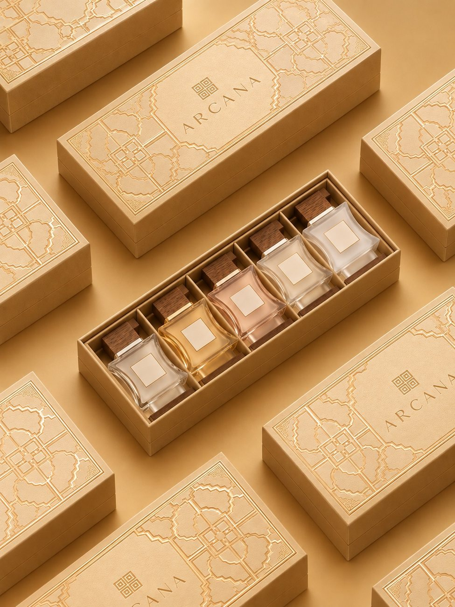
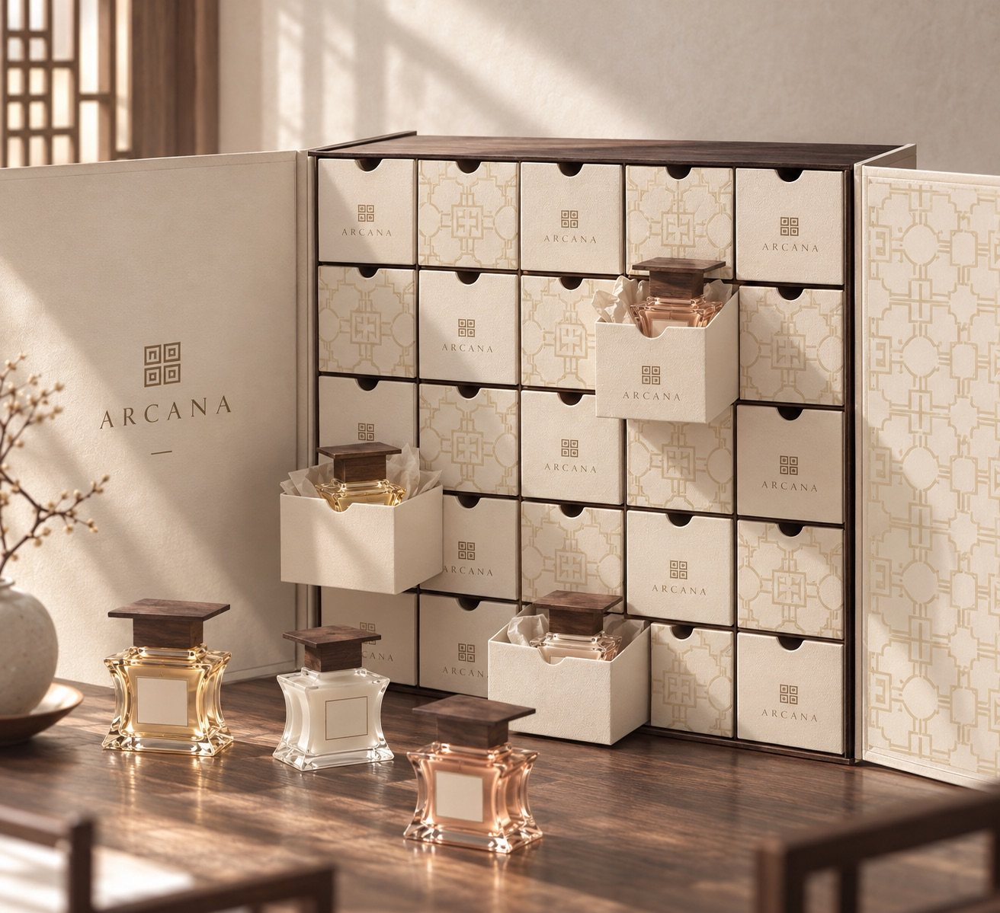
- Coffret서랍 세트 박스 = 한 서랍의 5단계. 꽃살 창살 무늬를 골드 엠보싱으로 눌렀다.
- L'Apothicaire스무 칸 서랍 상자. 4 서랍 × 5 제형, 집 안의 작은 약장이 된다.
- Refill상자는 버리지 않는다. 다 쓴 칸에는 보틀만 다시 채운다.
- InsideOrdonnance 처방전 · L'Herbier 표본 카드 4종 동봉
Le Rituel · 시간대 라인
아침에서 밤으로, 리추얼이 피어난다
시간대는 제품 이름이 아니라 사용법입니다. 봉오리 → 반쯤 열림 → 활짝 핀 꽃.
L'Herbier · 원료 표본집
서랍마다 하나의 원료, 하나의 장소
카드를 누르면 앞면 → 일러스트 → 뒷면으로 넘어갑니다. 제품마다 한 장씩 동봉되어, 모으면 나만의 L'Herbier가 됩니다.
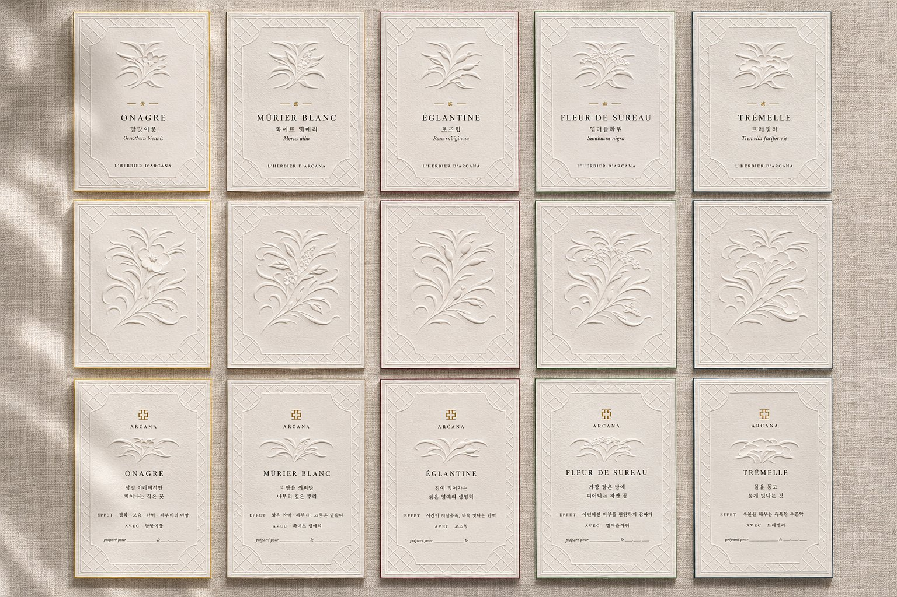
L'Ordonnance · 處方文
상담지에서 처방전까지, 한 장의 종이로
Consultation 카드에 오늘의 상태를 적으면, 서랍 번호와 리추얼이 적힌 처방전이 발행됩니다.
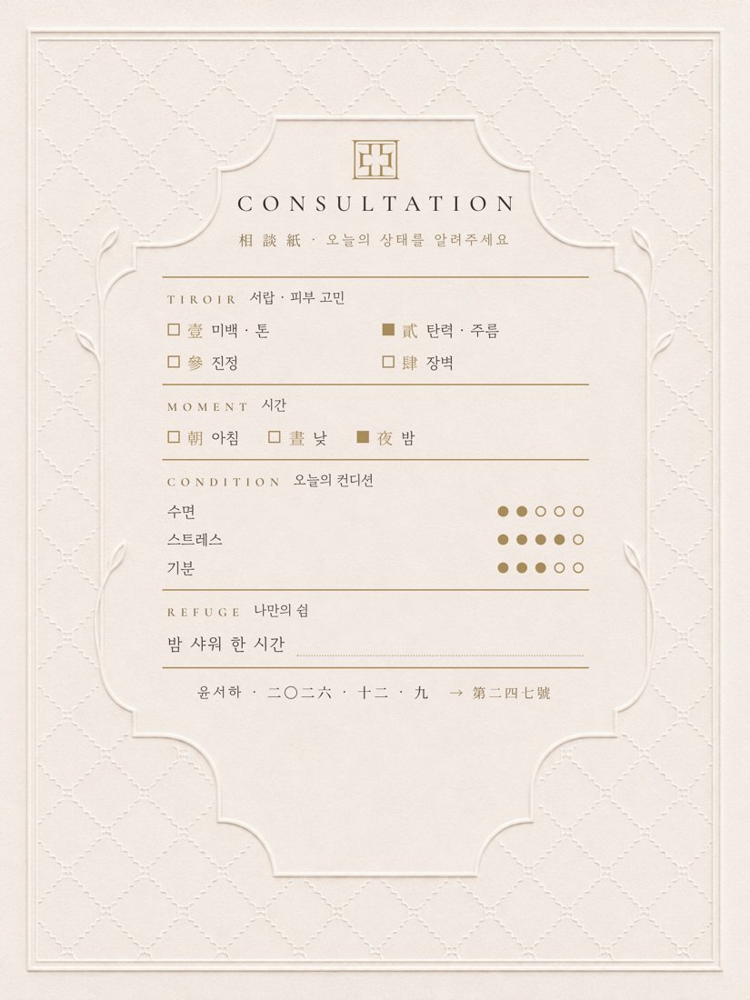
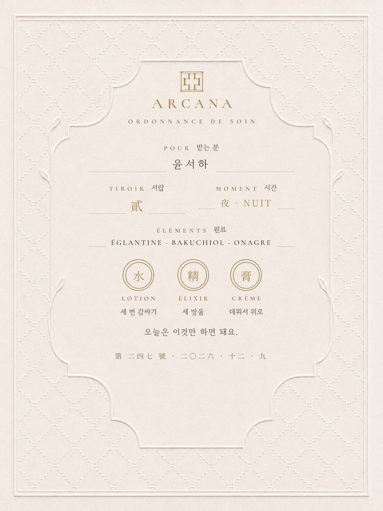
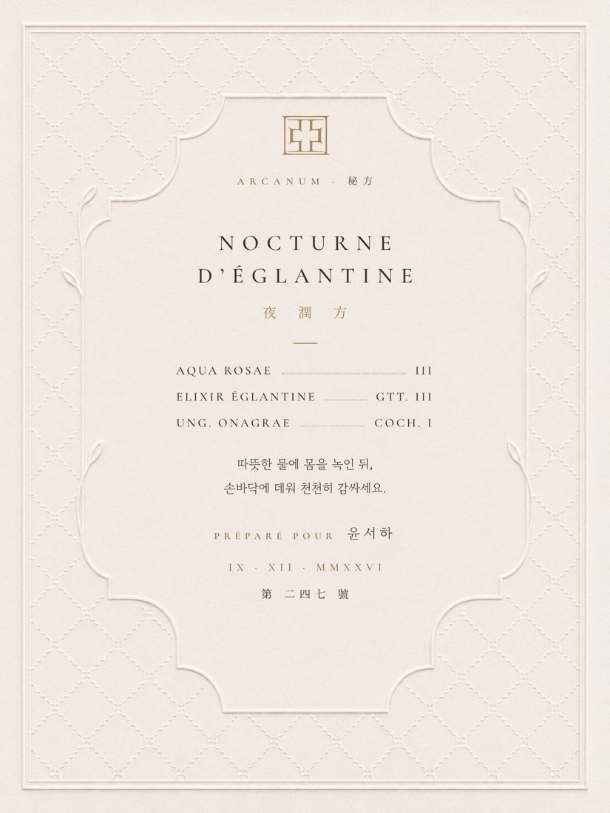
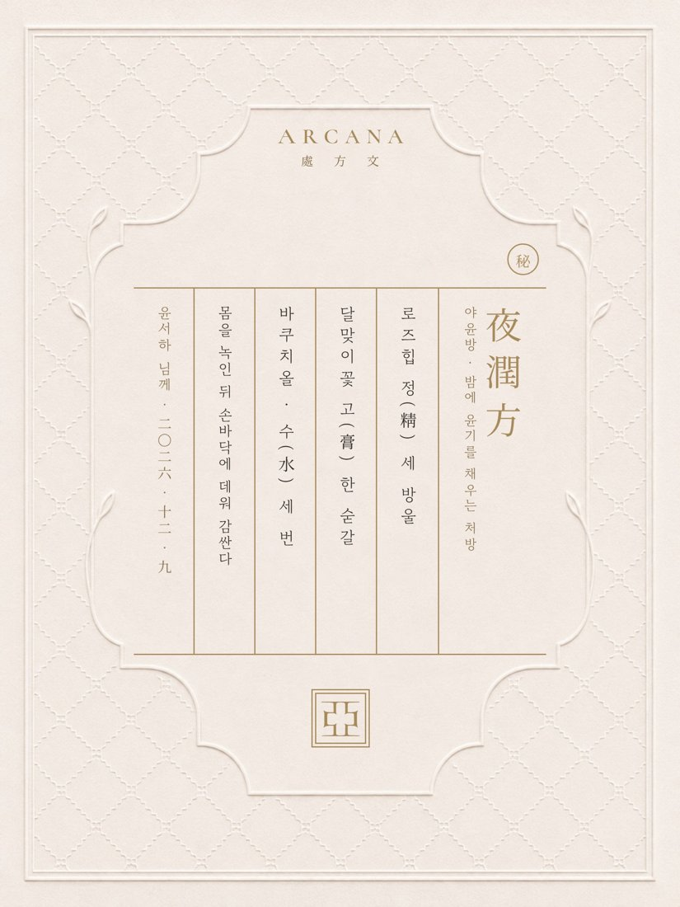
La Boutique · Web · Store · Package
하나의 동작, 세 개의 무대
웹에서 당기던 서랍이 매장에서는 빛이 드는 약장으로, 집에서는 원목 상자로 이어집니다.
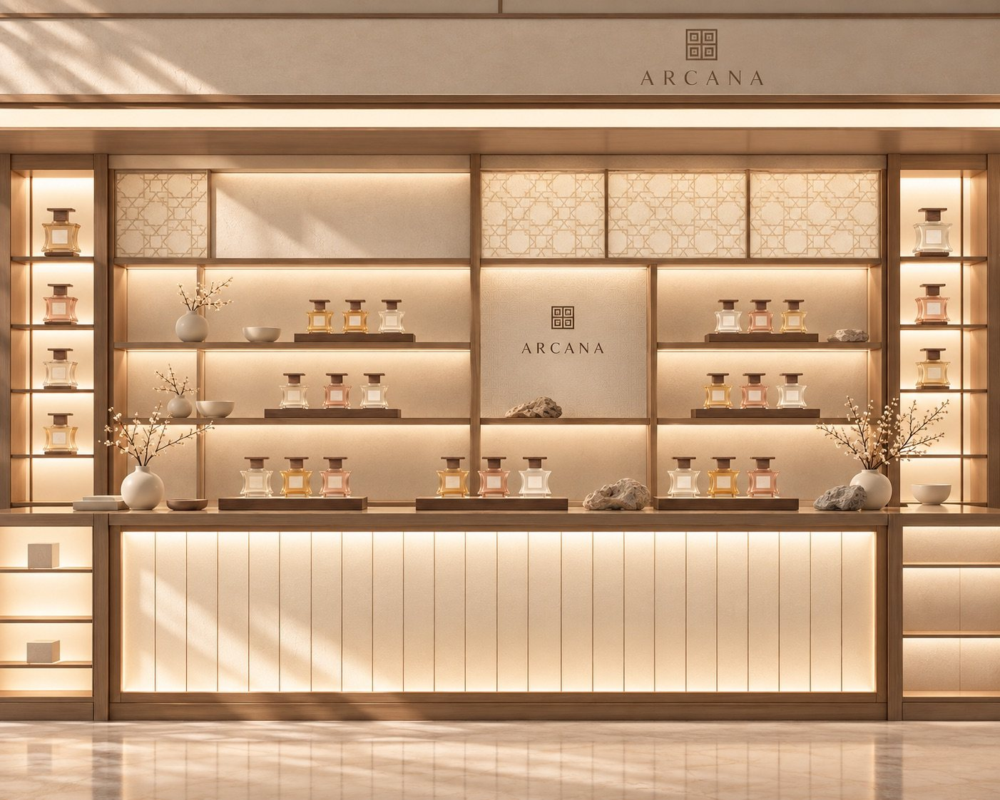
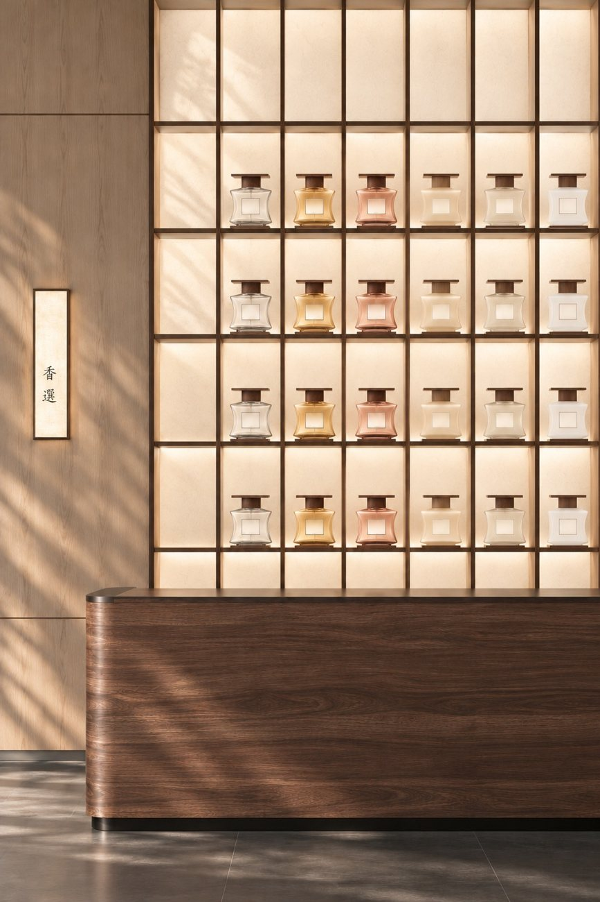
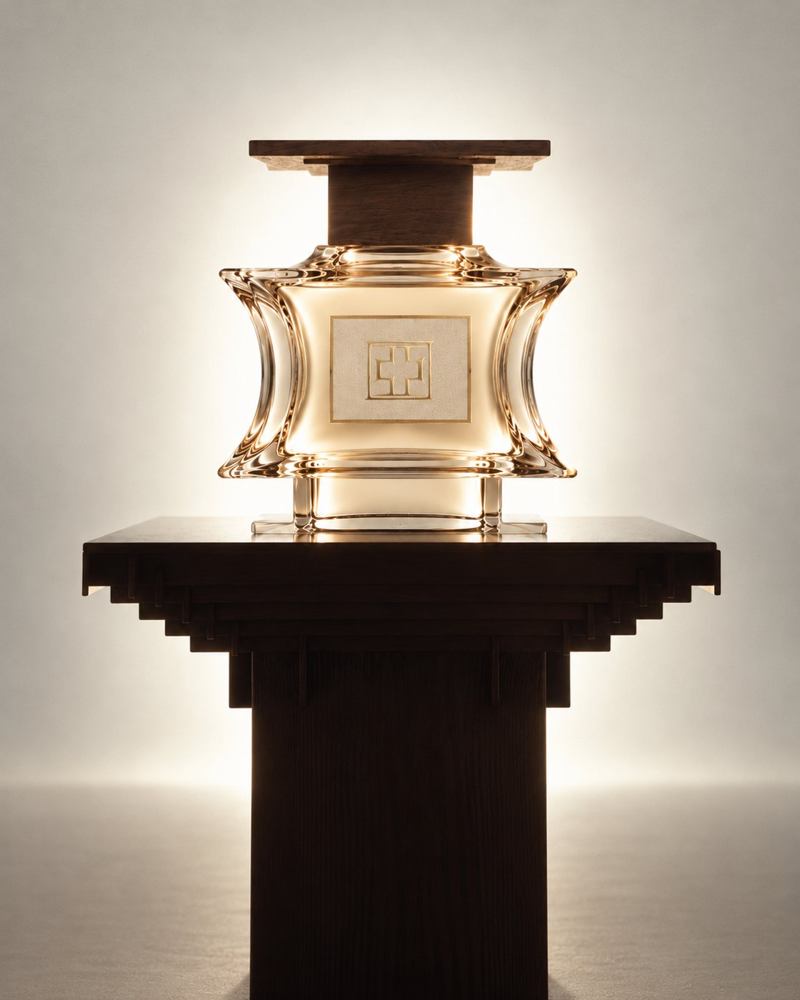
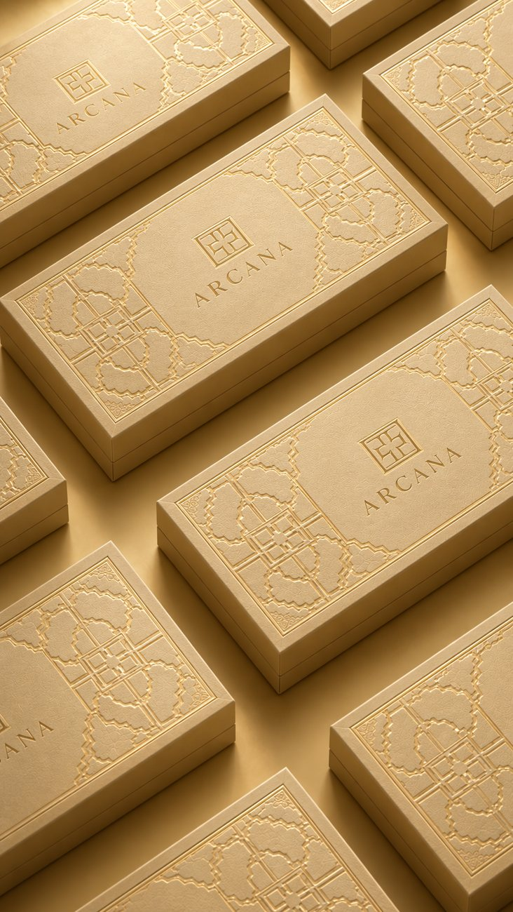
오늘은 이것만 하면 돼요.
고민 · 시간대 · 컨디션, 세 가지만 알려주세요.
당신을 위해 조제하겠습니다.